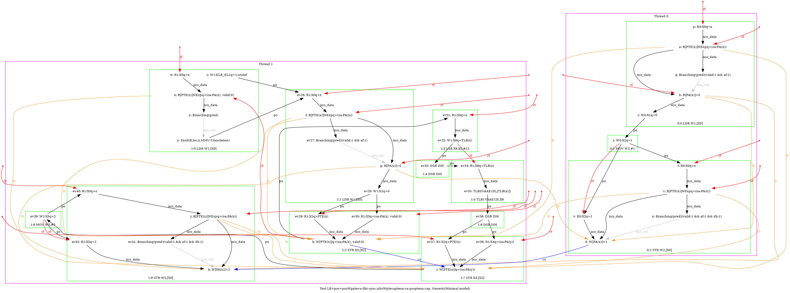
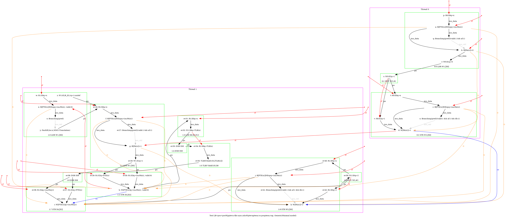
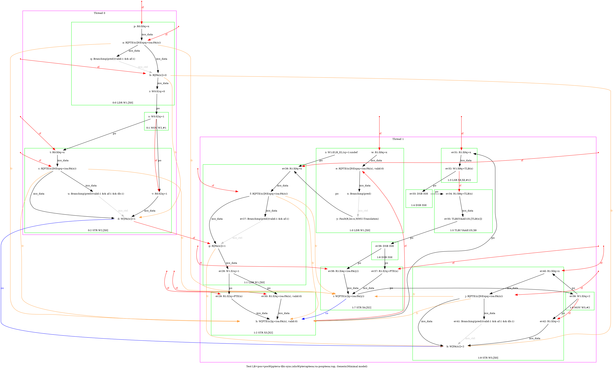
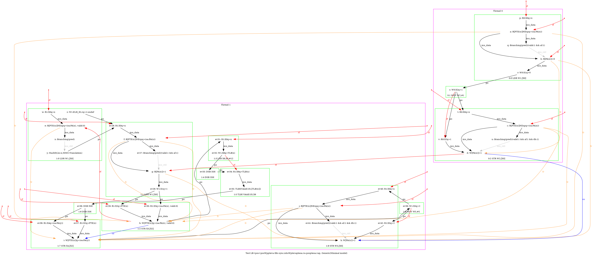
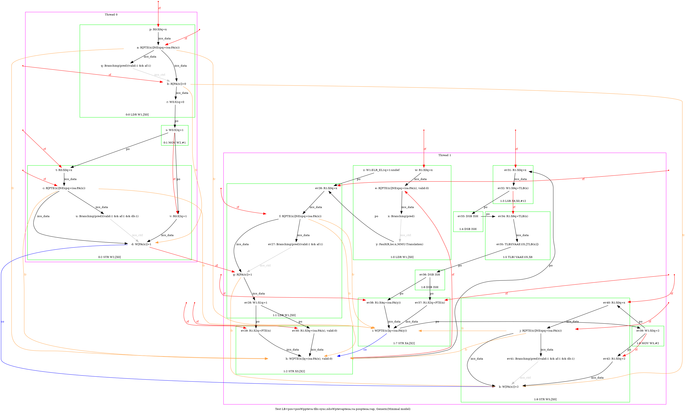

   …
 …
AArch64 LB+pos+posWppteva-tlbi-sync.ishsWptevapteoa.va-pospteoa.vap
"PosRW Rfe PosRWPPteVA TLBI-sync.ISHsWWPteVAPteOA.VA PosWWPteOA.VAP Rfe"
Variant=imprecise
Cycle=Rfe PosRW Rfe PosRWPPteVA TLBI-sync.ISHsWWPteVAPteOA.VA PosWWPteOA.VAP
Relax=[PteVA,TLBI-sync.ISHsWW,PteOA,PteVA]
Safe=Rfe PosWW PosRW
Generator=diy7 (version 7.56+02~dev)
Com=Rf Rf
Orig=PosRW Rfe PosRWPPteVA TLBI-sync.ISHsWWPteVAPteOA.VA PosWWPteOA.VAP Rfe
{ int x=0; int y=4;
0:X0=x;
1:X0=x; 1:X2=PTE(x); 1:X3=(oa:PA(x), valid:0); 1:X4=(oa:PA(y));
}
P0 | P1 ;
LDR W1,[X0] | LDR W1,[X0] ;
MOV W2,#1 | STR X3,[X2] ;
STR W2,[X0] | LSR X6,X0,#12 ;
| DSB ISH ;
| TLBI VAAE1IS,X6 ;
| DSB ISH ;
| STR X4,[X2] ;
| MOV W5,#2 ;
| STR W5,[X0] ;
exists (0:X1=0 /\ 1:X1=0 /\ [x]=1 /\ fault(P0,x,MMU:Translation) /\ fault(P1,x,MMU:Translation)) \/ (0:X1=0 /\ 1:X1=0 /\ [x]=2 /\ ~fault(P0,x) /\ ~fault(P1,x)) \/ (0:X1=0 /\ 1:X1=0 /\ [x]=2 /\ fault(P0,x,MMU:Translation) /\ ~fault(P1,x)) \/ (0:X1=0 /\ 1:X1=0 /\ [x]=2 /\ fault(P0,x,MMU:Translation) /\ fault(P1,x,MMU:Translation)) \/ (0:X1=0 /\ 1:X1=0 /\ [x]=2 /\ fault(P1,x,MMU:Translation) /\ ~fault(P0,x)) \/ (0:X1=0 /\ 1:X1=1 /\ [x]=1 /\ fault(P0,x,MMU:Translation) /\ ~fault(P1,x)) \/ (0:X1=0 /\ 1:X1=1 /\ [x]=1 /\ fault(P0,x,MMU:Translation) /\ fault(P1,x,MMU:Translation)) \/ (0:X1=0 /\ 1:X1=1 /\ [x]=2 /\ ~fault(P0,x) /\ ~fault(P1,x)) \/ (0:X1=0 /\ 1:X1=1 /\ [x]=2 /\ fault(P0,x,MMU:Translation) /\ ~fault(P1,x)) \/ (0:X1=0 /\ 1:X1=1 /\ [x]=2 /\ fault(P0,x,MMU:Translation) /\ fault(P1,x,MMU:Translation)) \/ (0:X1=0 /\ 1:X1=1 /\ [x]=2 /\ fault(P1,x,MMU:Translation) /\ ~fault(P0,x)) \/ (0:X1=4 /\ 1:X1=0 /\ [x]=2 /\ ~fault(P0,x) /\ ~fault(P1,x)) \/ (0:X1=4 /\ 1:X1=0 /\ [x]=2 /\ fault(P0,x,MMU:Translation) /\ ~fault(P1,x)) \/ (0:X1=4 /\ 1:X1=0 /\ [x]=2 /\ fault(P0,x,MMU:Translation) /\ fault(P1,x,MMU:Translation)) \/ (0:X1=4 /\ 1:X1=0 /\ [x]=2 /\ fault(P1,x,MMU:Translation) /\ ~fault(P0,x))